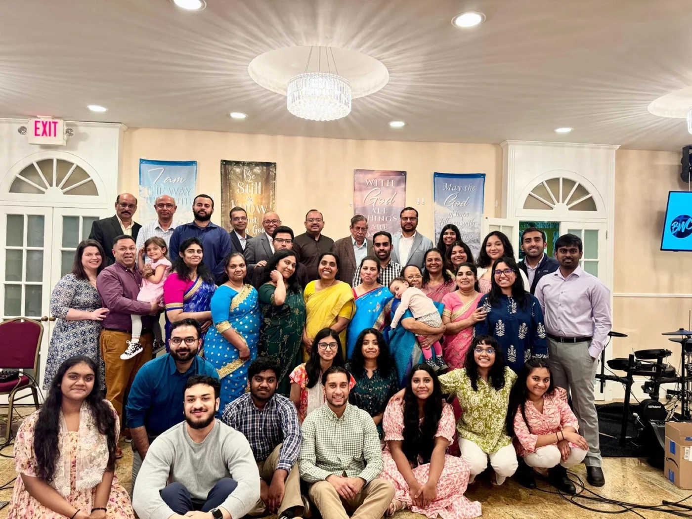

Our church
Get to know
Bethel.
A church family in Bronxville, worshipping in English and Malayalam.
English & Malayalam
Bronxville, New York
Bethel Worship Center is a Pentecostal church in Bronxville, welcoming people from Yonkers and across Westchester County. We worship in English and Malayalam, and share a desire to know Jesus and live out our faith.
Our Pastors
Meet our pastors.
Our pastors teach, pray, and walk alongside our church family. We’d love for you to get to know them when you visit.
Pray with us
Statement of Faith
What we believe.
The doctrines below shape how we worship, how we teach, and how we live. Read them in order, or jump to whichever speaks to you.
-
The Holy Bible
At a glanceThe Bible is our foundation for truth, belief, and daily life.
We believe the Bible is God's word to all people. It was written by human authors who were supernaturally guided by the Holy Spirit. The Bible is the supreme source of truth for Christian beliefs and living. It is reliable, trustworthy, and free from error in its original text. We hold the Scriptures in high regard and seek to study, understand, and apply its teachings.
Scripture references 2 Timothy 3:16–17 · 2 Peter 1:20–21 · Matthew 24:35
-
Baptism
At a glanceWater baptism identifies us with Christ; the Holy Spirit empowers believers.
Water baptism is performed by immersion. It is an important step of obedience and identification with Christ for all who repent and believe, administered in the name of the Father, of the Son, and of the Holy Ghost. It symbolizes our participation in the death, burial, and resurrection of Jesus.
The Baptism of the Holy Ghost is a necessity and privilege for every believer. It is an experience after salvation, evidenced by the initial physical sign of speaking in other tongues. Through it we receive empowerment, spiritual gifts, and a deeper connection with God.
Scripture references Romans 6:4 · Matthew 28:19 · 1 Corinthians 12:13
-
The Trinity
At a glanceWe believe in one God: Father, Son, and Holy Spirit.
We believe in one God who exists eternally in three persons: the Father, the Son (Jesus Christ), and the Holy Spirit. Each person of the Trinity possesses all the attributes of deity and works together in perfect harmony.
Jesus Christ is the only begotten Son of the Heavenly Father. He became incarnate, taking on human form, born of the Virgin Mary, to redeem humanity. Through Him, God's love, mercy, and plan of salvation are revealed to all.
Scripture references 2 Corinthians 13:14 · John 10:30 · John 1:14 · Isaiah 7:14
-
Our Savior
At a glanceJesus died for our sins, rose again, and intercedes for us.
Jesus Christ was crucified, bearing the weight of our sins and providing the ultimate sacrifice for our redemption. He was buried and rose from the dead on the third day, conquering sin and death. After His resurrection, He ascended to heaven and is now seated at the right hand of the Father, interceding for believers.
Scripture references 1 Peter 2:24 · 1 Corinthians 15:3–4 · Mark 16:19
-
One Single Truth
At a glanceRepentance and faith in Christ bring forgiveness and restoration.
We recognize that all humanity has sinned and fallen short of the glory of God. Repentance, turning away from sin and turning toward God, is commanded by God and necessary for forgiveness. Through faith in Jesus Christ and His redemptive work, we receive forgiveness and restoration to a right relationship with God.
Scripture references Romans 3:23–24 · Acts 3:19 · Ephesians 1:7
-
Salvation & Holiness
At a glanceSalvation is by grace, and the Holy Spirit leads us into holiness.
Justification, being declared righteous before God, and the new birth come through faith in Jesus Christ. Salvation is not based on our efforts or merits, but on God's grace and the work of Jesus. We are called to live lives of holiness, continually growing in Christ-likeness through the Holy Spirit and the study of God's Word.
We embrace God's standard of holiness for His people: lives dedicated to Him, set apart for His purposes, reflecting His character in our thoughts, words, and actions.
Scripture references Ephesians 2:8–9 · 1 Thessalonians 4:3–4 · 1 John 2:3–6